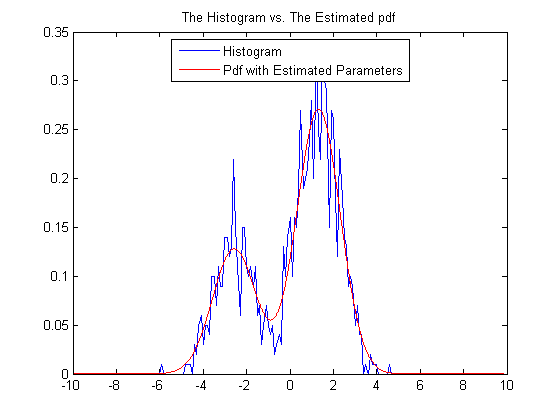

Expectation-Maximization Algorithm
We assume that the data consists of a Gaussian mixture with two components with unit variance. The weights and the means of the components are unknown. We demonstrate their estimation via the EM algorithm as discussed in class.
% the unknown parameters alp = rand(1,1); % this is the probability that z = 1 th = randn(2,1)*3; % the unknowm means % produce the data n = 1000; % number of observations. z = double( rand(n,1) < alp ); % hidden states x = randn(n,1) + th(1).*(1-z) + th(2).*z; % observations % initialization Ealp = 1/2; Eth = [0; 1]; % gaussian pdf g = @(x,m) (1/sqrt(2*pi))*exp(-0.5*(x-m).^2); % mixture pdf f = @(x,m,bet) (1-bet) * (1/sqrt(2*pi)) * exp(-0.5*(x-m(1)).^2) + bet * (1/sqrt(2*pi)) * exp(-0.5*(x-m(2)).^2); for iter = 1:1000, % expectation step d = Ealp * g( x, Eth(2) ) ./ f(x,Eth,Ealp); t = sum(d); % maximization step Ealp = t/n; Eth(1) = (1-d)'*x / (n-t); Eth(2) = d'*x / t; end del = 0.1; t1 = -10:del:10; t2 = -10:0.01:10; pdf = f(t2,Eth,Ealp); H = hist(x,t1); plot(t1,H/(n*del)); hold on; plot(t2,pdf,'r'); legend('Histogram', 'Pdf with Estimated Parameters','Location','Best'); title('The Histogram vs. The Estimated pdf');
Ilker Bayram, Istanbul Teknik Universitesi, 2015